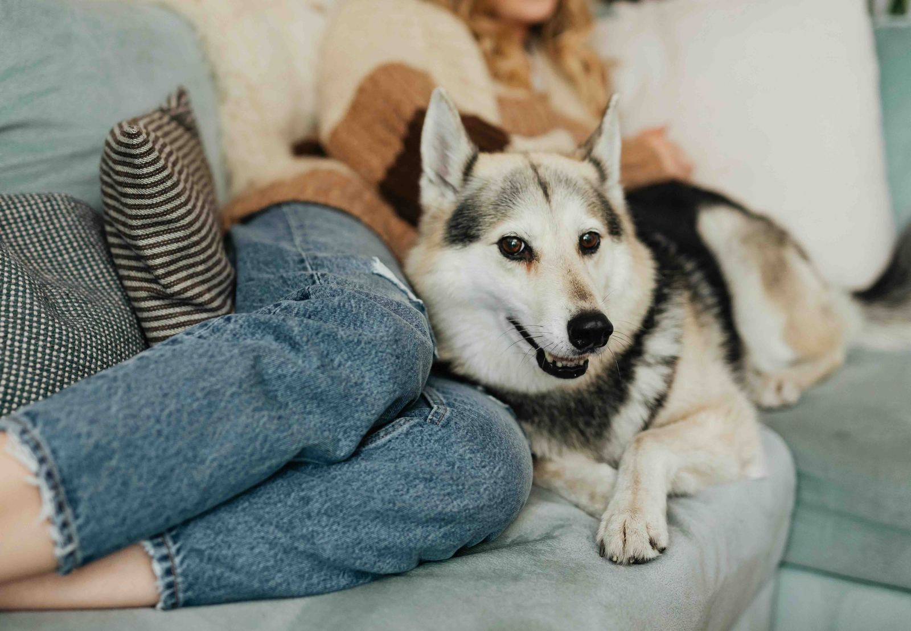

I used to think it was coincidence. The way he'd find me on the hard days — not with noise or demand, but with a quiet arrival. A head on my knee. A warmth pressed against my side that I hadn't asked for and somehow desperately needed. I told myself he could sense the stillness in the room, or maybe the changed pace of the afternoon.
But the more I paid attention, the more I realised something that felt almost too tender to say out loud: he knew before I did. Not after I cried. Not once I'd gone quiet. Before. In the moments when I was still performing fine — still answering emails, still moving through the day — he had already decided to stay close.
It turns out this isn't magic. It isn't sentimentality, either. There is actual science behind what dogs are doing when they read us this way — and understanding it has changed something in me. Because when you know how carefully you are being observed by something that loves you without agenda, it becomes very hard to feel entirely alone.
Some of the most honest companionship happens without a single word exchanged.
They Don't Wait for You to Say It
The first thing to understand is that dogs don't operate the way we do. We process our emotions consciously — we think them, name them, sometimes argue with them before we allow ourselves to feel them. Dogs skip all of that. They are reading you constantly, immediately, without interpretation or delay.
And what they're reading is remarkably specific. Long before your brain has consciously registered that something is wrong, your body has already begun responding. Stress hormones — cortisol, adrenaline — shift your chemistry in ways that are invisible to you and completely legible to a dog. Their sense of smell is estimated to be anywhere from 10,000 to 100,000 times more powerful than ours. They smell the chemical change in your sweat and breath before you've registered a single feeling.
Beyond scent, they are reading you physically in ways that would take a human years of therapeutic training to notice. A slightly slumped shoulder. A fractional change in your breathing. Eye contact avoided where it's usually offered. Micro-expressions your face makes in the fraction of a second before you compose it. None of this is dramatic or obvious — but to a dog who has spent years studying you as their primary subject, it is entirely unmissable.
He had already decided to stay close — in the moments when I was still performing fine, still moving through the day.
Ten Thousand Years of Learning to Read Us
This capacity didn't appear overnight. It is the result of something closer to a miracle — tens of thousands of years of dogs and humans living in such close proximity that dogs evolved an entirely new kind of social intelligence specifically tuned to us.
Unlike almost any other animal, dogs look directly at human faces for information. They don't just respond to commands; they are actively studying expressions, posture, and emotional tone in real time. Research has found they can distinguish between happy and angry faces, between relaxed and tense expressions, between the quality of attention that says you're present and the quality that says you've gone somewhere else inside your own head.
They also process our voices the way we do — evaluating not just what is said but the emotional weight behind it. A soft, slower tone registers as comfort. A low, sharp tone as warning. The gentle half-voice you use when you're trying to hold it together. Brain imaging studies have shown that dogs process emotional tone in regions of the brain similar to the ones humans use. They are not simply hearing sounds. They are reading feeling.
When They Feel What You Feel
There is something else that happens — something that goes beyond observation into a kind of shared experience. Researchers call it emotional contagion: the way one being begins to mirror the emotional state of another. Dogs do this with us with a fluency that can feel almost uncanny.
If you are anxious, your dog often becomes anxious. If you soften, they soften. If grief moves through you in the way it sometimes does — quietly, without announcement — they respond to that too. Not with noise or distraction, but with the specific attentiveness of a being who has decided that your sadness deserves to be witnessed.
This is why therapy dogs work so well in hospitals and grief counselling and schools. It isn't simply that they are soft and warm. It is that they are genuinely present with you — emotionally responsive in a way that asks nothing in return and offers something that is very difficult to manufacture with words.

There is a particular kind of peace in being loved by something that will never ask you to explain yourself.
What It Means to Be So Closely Seen
I have thought a lot about what it means to live alongside a creature who is this attuned to you. Who has, without being asked, made you their area of expertise. Who has learned the particular frequency of your sadness and arrives before it has a name.
What strikes me most is not the science of it — as fascinating as that is — but the intimacy. We spend so much of our lives carefully managing what we show. Composing our faces. Moderating our voices. Choosing which version of ourselves to present and to whom. And then there is this dog, who sees straight through the performance, not with judgment but with warmth. Who shows up anyway. Who stays.
There is something quietly healing about being known that completely. About existing in a relationship where you cannot hide, and where it turns out there is nothing in you that needs hiding. The dog doesn't love you because you held it together. He loves you because you are you — and he has been studying you long enough to know exactly what that means.
A gentle thought, for the hard days
The next time you notice your dog shift closer without being called, rest their head on you without a reason, or simply stay — know that it isn't coincidence. It is a thousand tiny observations made with love, arriving before you had to ask. You are more known than you realise.
狗狗看似安静的陪伴，本质上是一种非常高级的理解力
在那些不太容易的日子里，当你发现你的狗狗没有被叫就慢慢靠近你，把头轻轻靠在你身上， 或者只是安静地待在你身边时 — 那并不是巧合。那是很多很多细小瞬间累积起来的爱。 是它在日复一日的观察里，慢慢记住了你的情绪、你的节奏、你的状态。所以它在你还没开口之前， 就已经做出了回应。这种靠近，不需要语言，也不需要请求。它只是存在。而在这样的存在里， 其实藏着一个很重要的事实：你被理解的程度，比你想象中更深。真爱，不是回应“你说了什么”， 而是提前感知“你是什么状态”。 #狗狗 #宠物日记